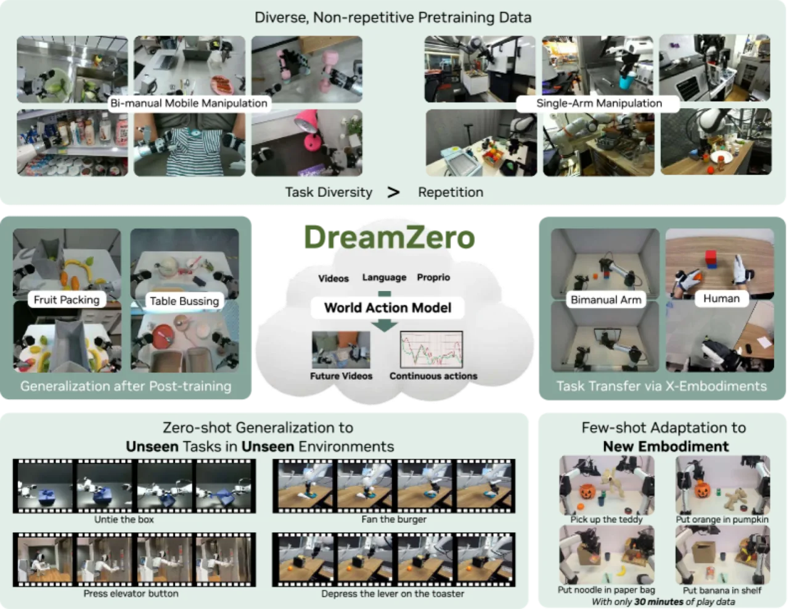
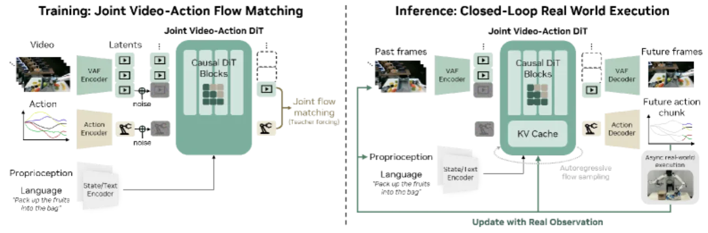
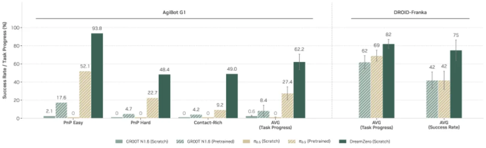
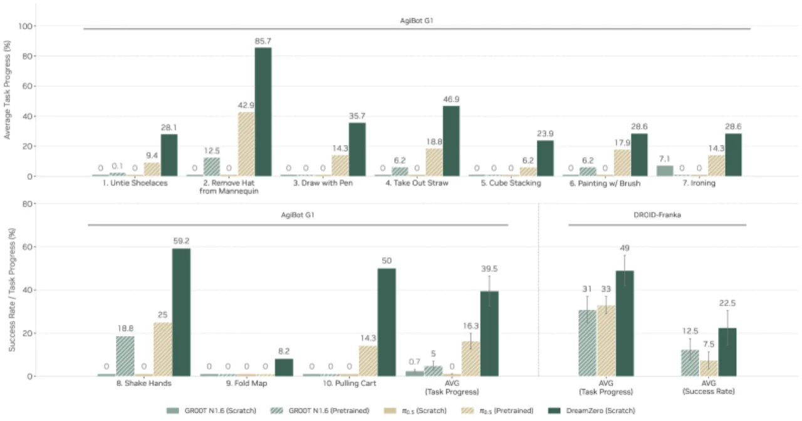
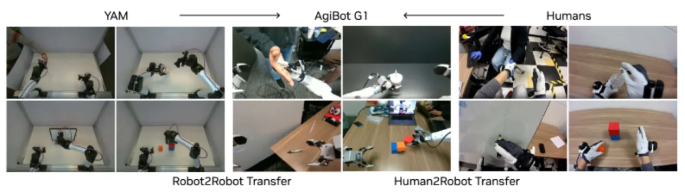

DreamZero 是一个 14B 参数的 World Action Model（WAM），基于预训练视频扩散模型 Wan2.1，联合预测未来视频帧和机器人动作序列。通过继承世界物理先验，它在从未见过的任务和环境中展现出 2× 以上的零样本泛化能力，并以 7Hz 实现实时闭环控制。
当前主流机器人策略（VLA）依赖大量重复性示范数据进行训练，对未见任务和环境的泛化能力极为有限；即便经过预训练，在多样化非重复数据上也几乎学不到任何有效行为。如何让机器人策略真正"理解"物理世界、实现开放世界零样本泛化，是本文的核心问题。
"By jointly predicting video and action, World Action Models (WAMs) inherit world physics priors that enable 1) effective learning from diverse, non-repetitive data, 2) open-world generalization, 3) cross-embodiment learning from video-only data, and 4) few-shot adaptation to new robots."

DreamZero 以 Wan2.1-I2V-14B-480P 图像到视频扩散模型为骨干，采用 flow matching 联合去噪视频帧潜变量与动作序列，训练时施加 teacher-forcing（逐块去噪），推理时将真实观测替换预测帧以避免误差累积。额外参数仅为状态编码器、动作编码器与解码器，骨干权重几乎不动。

模型将生成过程分解为：
π₀(videos, actions | observations, language, state) = π₀(videos | observations, language, state) × π₀(actions | videos, state)
视频和动作在同一个 DiT 骨干中共同去噪，两者通过注意力机制深度耦合，保证动作与视频语义强对齐。相比于"先生成视频再预测动作"的两阶段方案，端到端联合训练在实验中显示出显著优势。
DreamZero 使用自回归（autoregressive）而非双向（bidirectional）注意力。自回归架构保留了帧的原始帧率，不需要为与语言对齐而降采样视频，避免了双向 WAM 中时序错位问题（Figure 13 对比）。更重要的是，自回归结构天然支持 KV cache：历史帧的 KV 对只需计算一次，推理时只需新帧重新计算，单步推理速度提升 3–4×。
为支持单步去噪（1 NFE），DreamZero-Flash 引入解耦噪声调度（decoupled noise schedules）：视频侧采用 Beta(7,1) 分布将噪声集中于高噪区间，而动作侧保持均匀分布。这迫使模型学会"从高度噪声的视觉上下文预测干净动作"，使得单步推理下的任务进度从 52% 恢复至 74%。结合系统级与实现级优化（CFG 并行、DiT velocity cache、Torch Compile with CUDA Graphs、NVFP4 量化），总推理速度提升 38×，延迟降至 150ms（7Hz）。
主要评测平台：AgiBot G1（22 个真实场景，约 500 小时遥操数据，7.2K 轮次，平均每轮 4.4 分钟、约 42 个子任务）和 DROID-Franka。基线包括从零训练的 VLA 与预训练 VLA（含 π₀、RDT 等 SOTA 方法）。主要指标：平均任务进度（task progress，%）与成功率。
| 评测设置 | 从零训练 VLA | 预训练 VLA（最优） | DreamZero |
|---|---|---|---|
| AgiBot G1 已见任务（task progress） | ≈0% | 27.4% | 62.2% |
| AgiBot G1 未见任务（task progress） | <1% | 16.3% | 39.5% |
| DROID-Franka 任务进度 | — | 31–33% | 49% |
| DROID-Franka 成功率 | — | — | 22.5% |



| 迁移方向 | 迁移前基线 | 迁移后（DreamZero） | 数据量 |
|---|---|---|---|
| YAM → AgiBot（robot-to-robot） | 38.3% | 55.4% | 20 min 视频 |
| 人体 egocentric → AgiBot（human-to-robot） | 38.3% | 54.3% | 12 min 视频 |
全部消融在 AgiBot PnP Easy 任务上，训练 50K 步、batch size 32：
| 消融维度 | 配置 | 任务进度 |
|---|---|---|
| 数据多样性 | 多样化非重复数据 | 50% |
| 数据多样性 | 重复性数据 | 33% |
| 模型规模 | 14B 参数 | 50% |
| 模型规模 | 5B 参数 | 21% |
| 注意力机制 | 自回归（AR） | 50%（动作更平滑，推理 3–4× 更快） |
| 注意力机制 | 双向（BD） | 50%（等价任务进度，但有帧率失真问题） |
关于 DreamZero-Flash（单步去噪）：4 步去噪时任务进度为 89%，降至 1 步后 DreamZero 仅保留 52%（≈基线 83%），而 DreamZero-Flash 通过解耦噪声调度恢复至 74%。
DreamZero 当前视觉上下文窗口仅约 6 秒，长程推理和多步骤规划能力受限。需要更长历史窗口才能处理复杂连续任务。
多样化预训练数据以探索性和多样性为导向，子厘米级精度任务（如精密插针）在训练集中代表性不足，影响此类任务的成功率。
即使经过 38× 推理加速，DreamZero 仍运行在 7Hz，而典型 VLA 可达 20Hz 以上。高精度实时控制场景仍面临延迟压力。
论文指出尚未对 WAM 特定的 scaling law 做深入探索，更大模型或更多数据的收益曲线未知。
Few-shot embodiment adaptation 目前仅验证于形态相似的机器人（AgiBot G1 ↔ YAM），对形态差异极大的平台（如四足、手型机器人）的效果尚未验证。